C++
객체지향 문법과 STL을 활용해 게임 로직과 상태 구조를 구현할 수 있습니다.
ProgrammingGAME CLIENT PORTFOLIO
박신우 Park Shin Woo
E-Mail tlsdn0403@gmail.com
GitHub github.com/tlsdn0403


ABOUT ME / PAGE 01
객체지향 문법과 STL을 활용해 게임 로직과 상태 구조를 구현할 수 있습니다.
ProgrammingActor/Component, Collision/Trace, Behavior Tree, Vehicle/Interaction 흐름을 C++로 구현했습니다.
EngineC# 기반 UI/UX, Physics, Multiplayer, WebGL 클라이언트를 개발했습니다.
EngineDirect2D, DirectWrite를 사용해 저용량 2D 로그라이크 게임의 화면과 시스템을 구성했습니다.
Client브랜치 관리, 커밋 단위 정리, 팀 프로젝트 협업 기록을 관리했습니다.
Collaboration플레이 증상을 재현하고, 상태와 충돌 흐름을 따라가며 실행 결과로 구현을 확인합니다.
WorkflowPROJECT INDEX
UE5 · C++ · 협동 TPS
Combat / VehicleC++17 · Win32 API · 1.4mb
Dungeon / Boss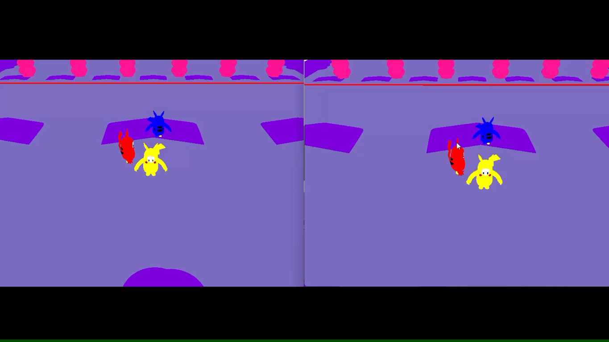
C++ · OpenGL · TCP/IP
Packet / CollisionUnity · WebGL · AI Tool
Board / Turn FSMPROJECT 01 / PAGE 01
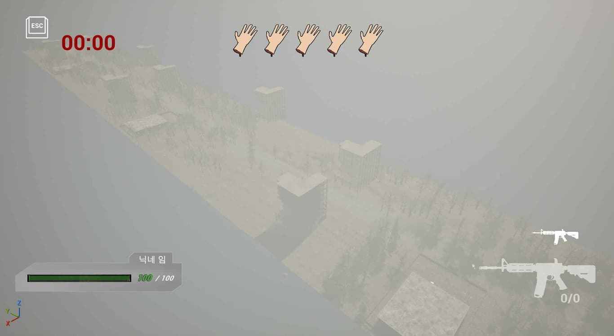
PROJECT 01 / PAGE 02
조장으로서 개발 일정을 함께 짜고, 보고서를 매주 전송하며 서로의 진행상황을 공유하였습니다.
기능 단위로 필요한 작업을 나누어 진행했습니다.
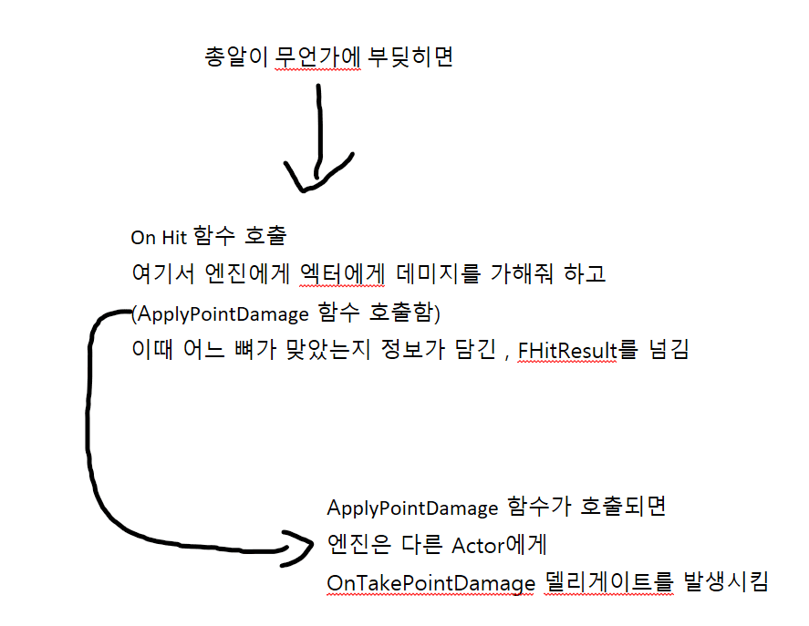
문제, 원인, 수정 방향을 문서로 남겼습니다.
PROJECT 01 / PAGE 03
총알 피격 위치를 `FHitResult`와 BoneName으로 전달하고, 부위별 내구도 감소와 Mesh 분리, 하체 분리 후 기어가기 상태 전환까지 연결했습니다.
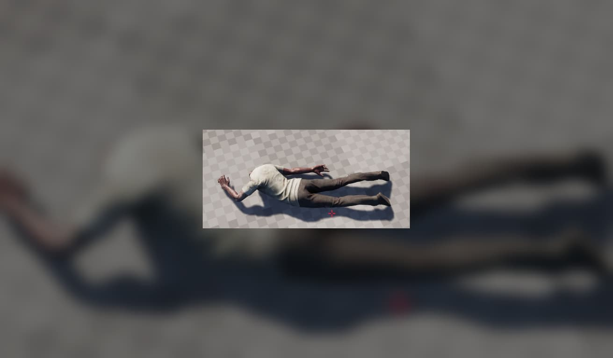
피격 지점에 따라 분리 대상 부위를 결정합니다.
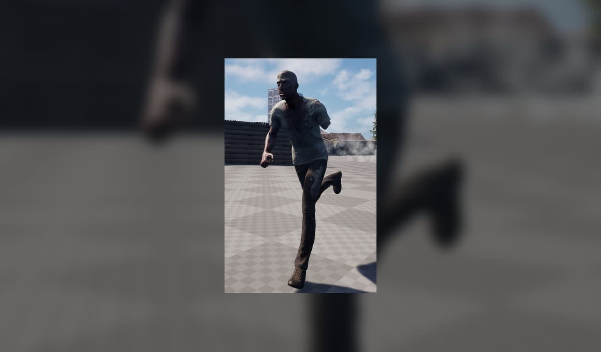
다리 분리 이후 Crawling 상태로 전환합니다.
PROJECT 01 / PAGE 04
트럭을 단순 이동 수단이 아니라 적재, 기관총, 운전이 연결되는 상호작용 허브로 구성했습니다.
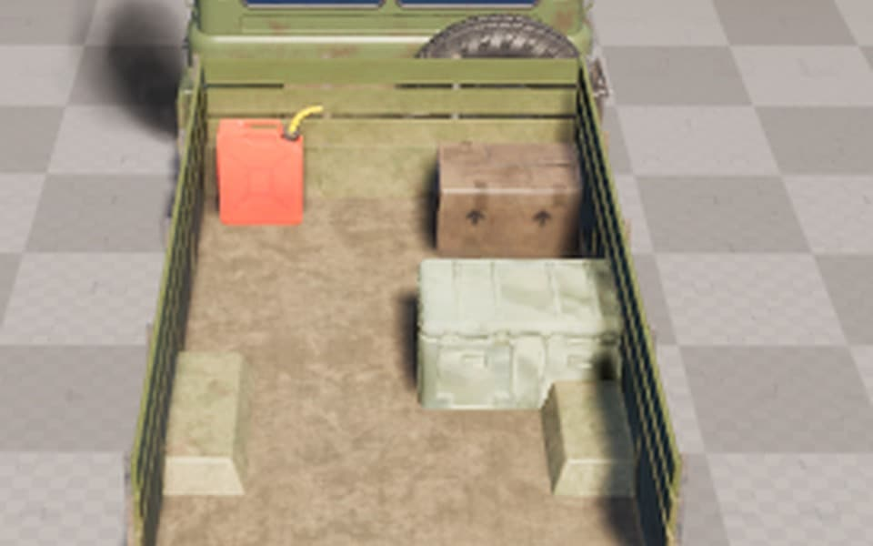
Trace로 적재 대상을 찾고 트럭의 적재 위치와 상태를 갱신합니다.
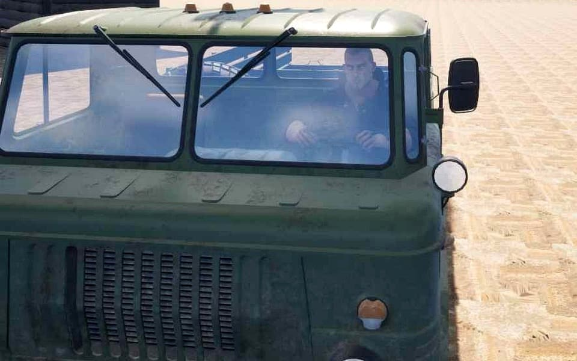
탑승 위치, 조작 권한, 발사 흐름을 하나의 상호작용으로 연결합니다.
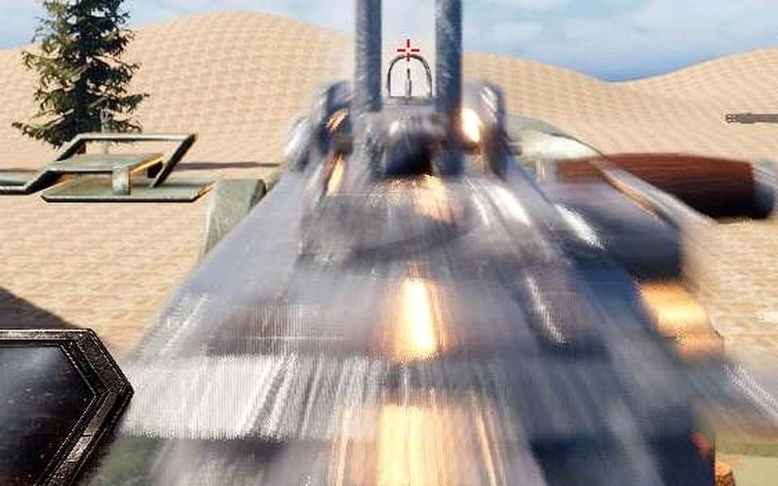
Vehicle 입력과 카메라 전환을 연결해 탑승부터 운전까지 완성합니다.
BUBBLE ROGUE / PAGE 01
BUBBLE ROGUE / PAGE 02
방, 문, 통로를 매번 다시 생성하고, 레벨별 보스 패턴과 보상 루프를 연결했습니다.
방 단위 전투 흐름과 적 등장, 클리어 후 이동 루프를 구성했습니다.
초기 보스 패턴과 플레이어 공격 회피 흐름을 확인할 수 있습니다.
단계별 보스 패턴을 분리해 진행 난이도를 확장했습니다.
BUBBLE ROGUE / PAGE 03
무기 제작, 공용 강화, 광산 채광 등 성장하는 재미를 느낄 수 있는 시스템을 만들었습니다.
레벨 진행에 맞춘 보스 패턴과 보상 구조를 연결했습니다.
대형 보스 패턴과 전투 루프를 영상으로 확인할 수 있습니다.
특수 적과 폭발 패턴을 통해 전투 리듬을 다르게 구성했습니다.
Win32 API 기반 구조에서 던전 생성, 보스전, 강화 시스템을 묶어 반복 플레이가 가능한 흐름으로 정리했습니다.
NETWORK GAME PROGRAMMING / PAGE 01
NETWORK GAME PROGRAMMING / PAGE 02
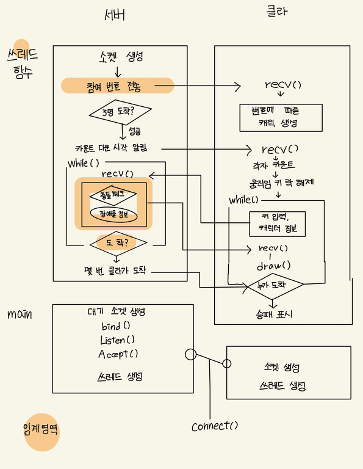
접속부터 렌더링까지 상태 이동 시점을 나누고 서버에서 충돌과 도착 상태를 확인하도록 설계했습니다.
Accept 순서에 따라 캐릭터 번호를 부여하고 클라이언트별 스레드를 생성
클라이언트가 입력과 Character 상태를 서버로 전송
서버에서 캐릭터·장애물 AABB Collision과 도착 상태 확인
갱신된 상태를 각 클라이언트에 전달해 동일한 장면을 렌더링
NETWORK GAME PROGRAMMING / PAGE 03
클라이언트 입력을 서버로 보내고, 서버가 갱신한 캐릭터 상태를 다시 모든 클라이언트에 전달하는 흐름을 구현했습니다.
접속 순서별 캐릭터 번호와 상태를 화면에 반영했습니다.
C2S/S2C 패킷 구조로 상태 갱신 경로를 단순화했습니다.
FlickDom / PAGE 01
AI 활용 능력 / PAGE 01
씬, 오브젝트, 컴포넌트 작업을 빠르게 확인하고 반복했습니다. AI 결과는 실행 화면과 코드 흐름으로 다시 검증했습니다.
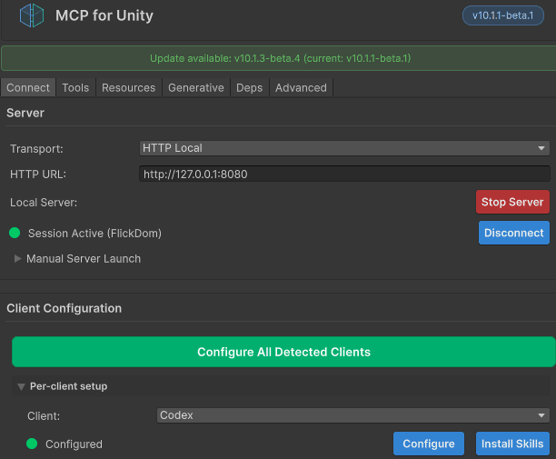
보드, 디스크, 소품 리소스의 비율과 배치 목적을 정리하며 3D 제작 과정을 보조했습니다.
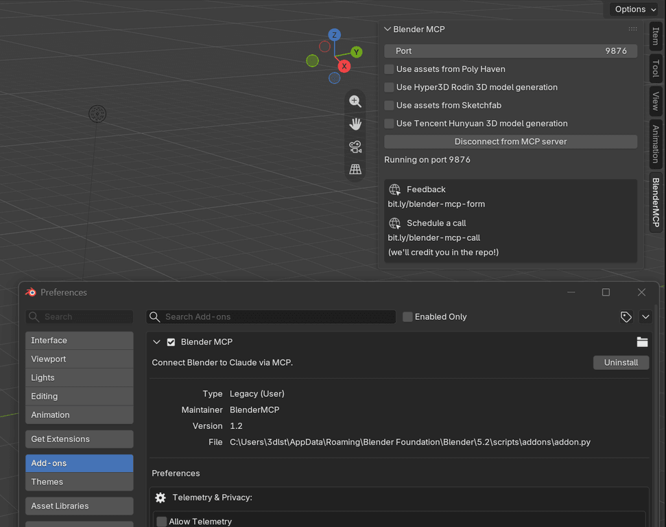
FlickDom / PAGE 02
5×5 Board 점령 Logic, Cell 선택·배치 후보 처리, Card Pattern Matching, Stage 진행, Monkey 조작·Camera 흐름, Main Menu를 구현했습니다.
초기 Host/Client 동기화 기반 위에서 FSM 기반 턴 흐름과 멀티플레이 상태 전환을 연결하고 Network 구조를 수정했습니다.
WebGL Build·배포 환경을 구성하고 실제 브라우저에서 접속, 게임 진행, 상태 동기화를 검증해 최종 Release까지 마무리했습니다.